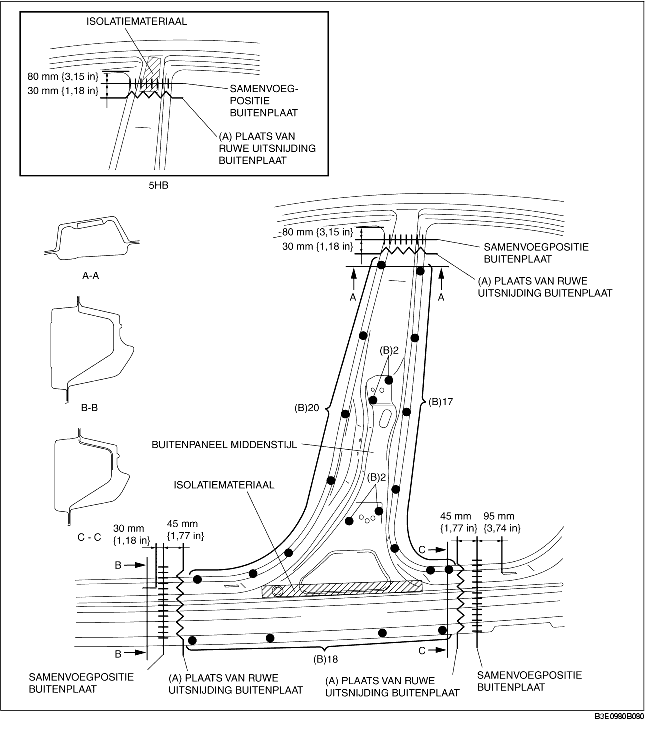
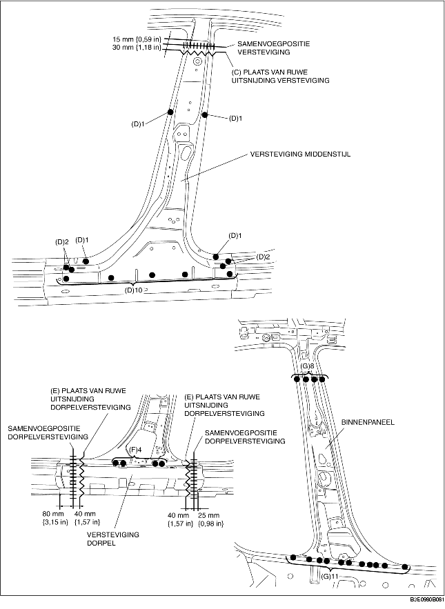

1. Maak ruwe uitsnijdingen bij (A), boor de 59 punten aangegeven met (B) uit en verwijder de buitenplaat van de middenstijl.
2. Maak ruwe uitsnijdingen bij (C), boor de 18 punten aangegeven met (D) uit en verwijder de versteviging van de middenstijl.
3. Maak ruwe uitsnijdingen bij (E), boor de 4 punten aangegeven met (F) uit en verwijder de versteviging van de dorpel.
4. Boor de 19 punten aangegeven met (G) uit en verwijder het binnenpaneel van de middenstijl.

